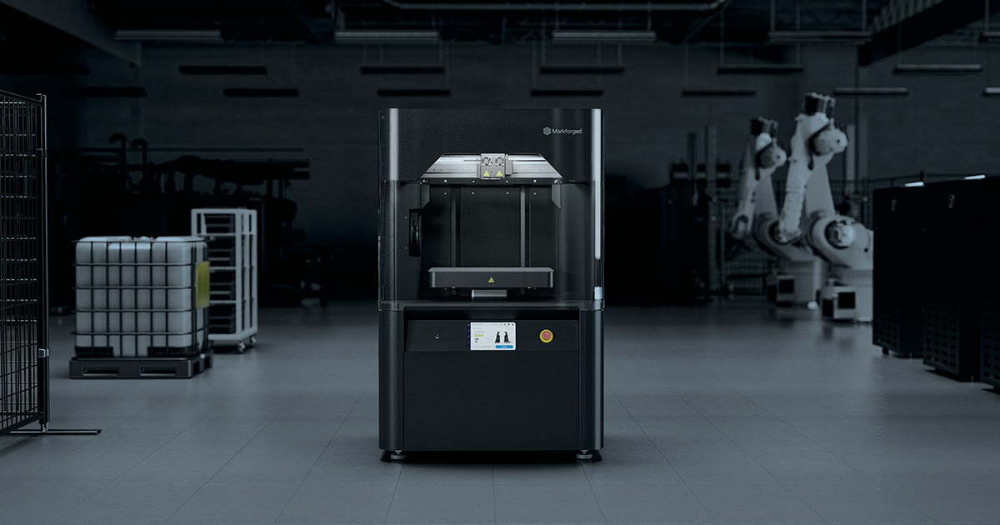
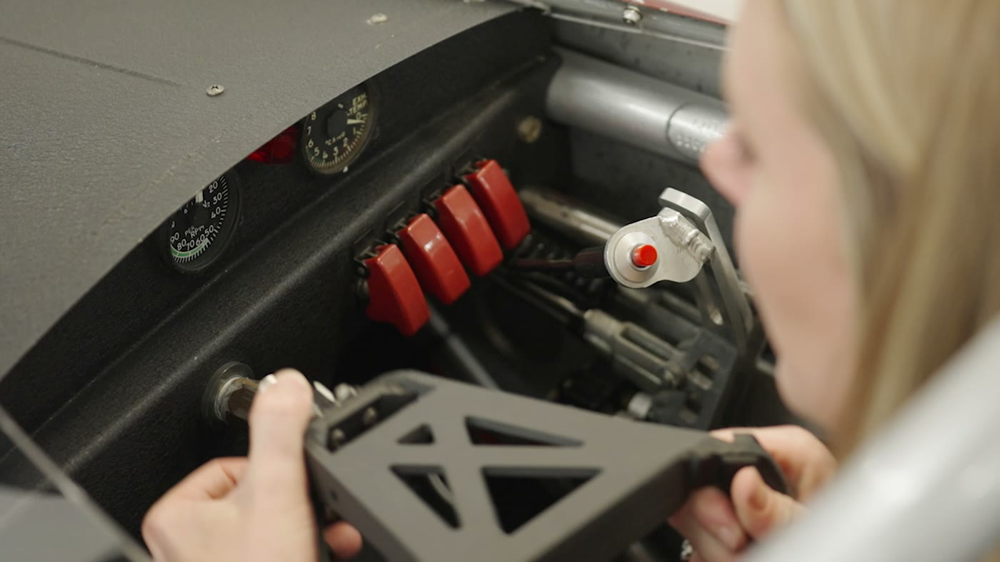
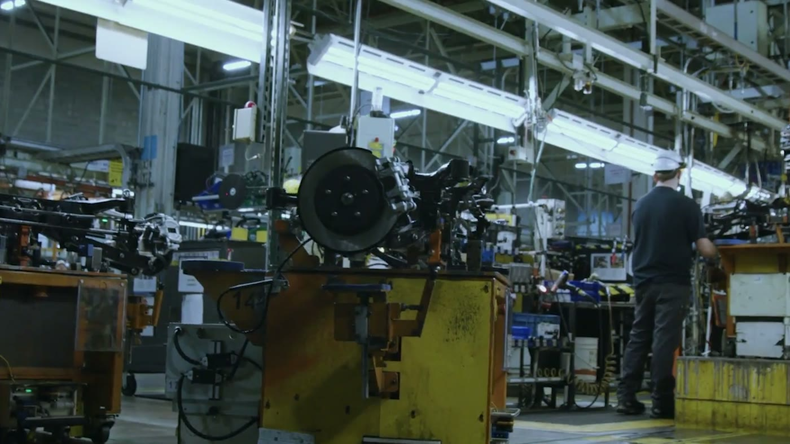
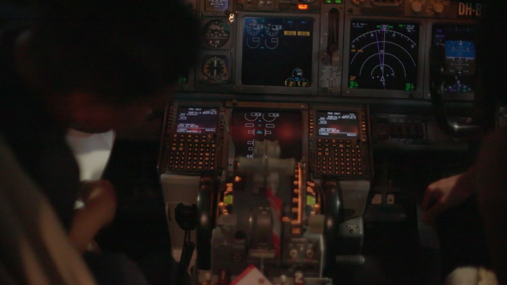
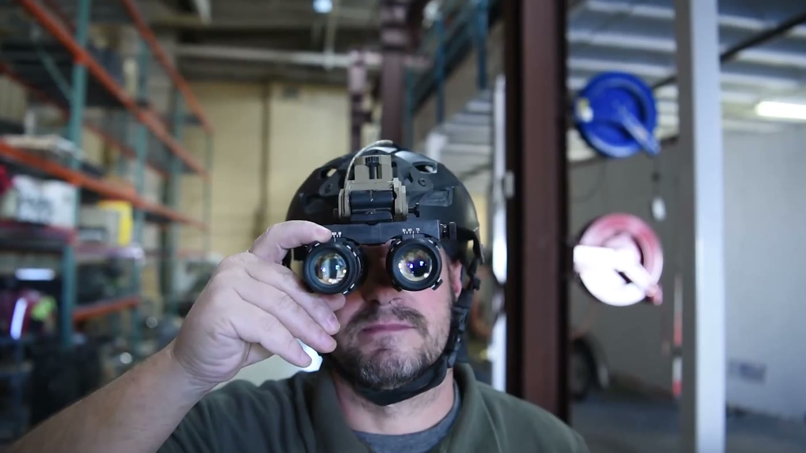
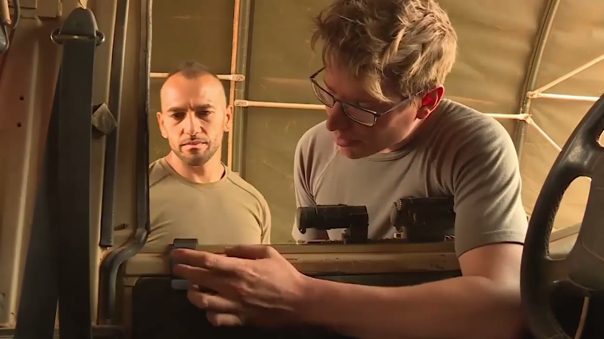
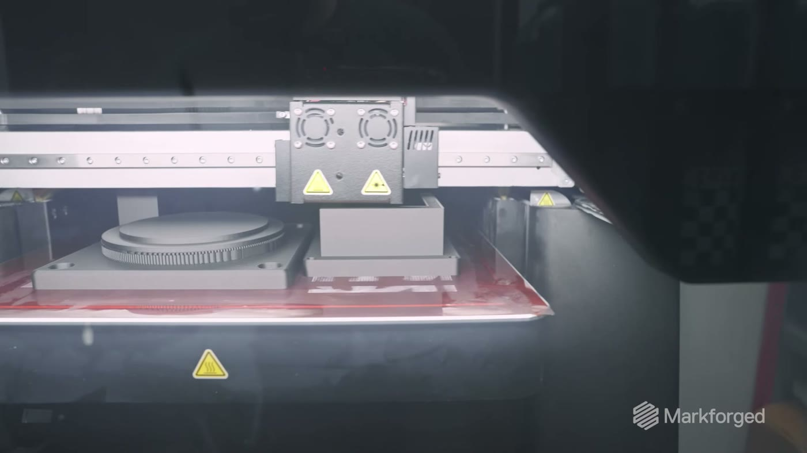

News & Insights

從這裡開始
FX10 是 Markforged 為工廠現場設計的工業級 3D 印表機：以連續碳纖維強化複合材列印治具與零件，加裝 Metal Kit 後，同一台機器也能列印 316L、17-4PH 不鏽鋼與 H13 工具鋼。以下是 Markforged 原廠發布的九個汽車、航太與國防案例，每一則都附原文連結；案例使用的機型照原文標示。

汽車：性能關鍵
產線不能停，治具和零件就得撐得住
Graham Rahal Performance（美國，超跑改裝｜FX10） 過去師傅手工做一組治具、支架或排氣零件，要花 20 到 40 小時切割、成形、焊接；導入 FX10 後，同樣的治具在 CAD 畫好、隔夜印完、隔天就用。為 1,000 匹馬力的油電超跑 Lamborghini Revuelto 製作 X-pipe 排氣時，GRP 用 FX10 以 316L 不鏽鋼印出法蘭，表面可直接焊接，幾乎不需後加工。 原廠案例（英文） →
Subaru of Indiana Automotive（美國，整車組裝） 同一條線同時組裝多個車型，治具之間只差幾公釐。原本用 ABS 列印的彩色治具耐不住產線使用、容易開裂；改用 Onyx GF 後，每個車型配一種顏色，作業員第一次伸手就拿對治具。用來貼保險桿 QR 追蹤標籤的定位治具，精度做到 0.1 mm。 原廠案例（英文） →
Dana Incorporated（全球車用傳動與動力系統供應商｜X7） Dana 在七個國家的據點部署 Markforged 印表機。義大利 Rovereto 工程中心用 X7 列印加工時固定零件的複材治具，上線超過一年沒有故障，每件治具成本降低 70%、交期縮短 90%。 原廠案例（英文） →


航太：任務關鍵
飛上去之前，零件就得通過每一道檢驗
Plane Support × McDermott Aviation（澳洲，直升機工程與維修｜FX10） Plane Support 以 FX10 為核心建立航太積層製造實驗室，用具批次追溯的阻燃材料 Onyx FR-A 列印 Bell 214B 直升機的機艙空調風管，取得澳洲民航安全局（CASA）核准，可用積層製造生產這項零件。合作夥伴 McDermott Aviation 擁有全球最大的 214B 機隊，主要投入山林火災空中滅火。 原廠案例（英文） → 本站專文：一截風管，換來亞太第一張民航增材製造核准
Cabin Management Solutions（美國，私人與商務噴射機客艙系統｜X7） CMS 為私人與商務噴射機提供客艙管理與機上娛樂系統的維修、升級與替換，取代原廠動輒漫長的交期與高價。公司 2019 年成立後購入兩台 X7，以 UL 94 V-0 阻燃等級的 Onyx FR 列印機上娛樂系統改裝件等最終使用零件，符合美國聯邦航空總署（FAA）的要求。 原廠案例（英文） →
Hangar One Avionics（美國，航電維修與安裝） Hangar One 以碳纖維強化複材零件取代鋁件，為直升機減重；並用 Markforged 的 Blacksmith 檢測軟體在列印過程中自動量測。原本每件人工量測要 30 到 45 分鐘，導入後平均每件省下約 30 分鐘。 原廠案例（英文） →

國防：任務關鍵
補給線拉長的時候，能在現場做出零件就是戰備
美國陸軍 Fort Irwin 國家訓練中心 一款裝在車頂、協助駕駛夜間觀察的艙蓋塞已經停產，重新製作約需 10,000 美元、交期 3 個月。部隊改用 Markforged 以 Onyx 印出一件只花 230 美元，另以 17-4PH 不鏽鋼印出金屬版 800 美元；單這一項應用就省下 244,000 美元。 原廠案例（英文） →
美國空軍 Cannon 空軍基地 第 27 特種作戰支援中隊（X7） 夜視鏡固定座在訓練中容易撞壞，買一個要 100 美元到數百美元、還要等好幾週。中隊用 X7 列印替換件，並加上可適配多種頭盔的墊片，每件成本不到 5 美元、幾小時就完成；負責人表示強度與市售鋁製品相當。 原廠案例（英文） →
美國退伍軍人事務部 中維吉尼亞醫療體系 輔具團隊與職能治療師合作，為手部抓握力不足的退伍軍人與現役軍人設計腕帶式握筆輔具，以 Markforged 印表機和 Smooth TPU 95A 彈性材料列印，讓使用者能穩穩握住筆或觸控筆。 原廠案例（英文） →


為什麼是 FX10
金屬和連續碳纖維在同一台機器上，就放在工廠現場
上面九個案例的共同點，是零件在要用的地方做出來，不必等外包或等原廠備料。FX10 把複材與金屬兩種製程放進同一台機器，讓這件事從一個專案變成產線上的日常。
複材可用 Onyx、Onyx FR／FR-A、Onyx ESD、Onyx GF 等材料，並可加入連續碳纖維強化。同時需要複材與金屬零件，可參考 FX10 Sinter-2 Bundle。

下載與延伸閱讀
原廠電子書與本站相關報導
下載原廠電子書：汽車產業的積層製造（英文 PDF，20 頁） 收錄 GRP、Subaru、Dana 三個案例與 FX10、FX20、X7 機型介紹。
一截風管，換來亞太第一張民航增材製造核准 Plane Support 案的完整報導。
參考治具比銑削便宜最多 75%：德國治具廠 WESCAD 導入 FX10 另一個 FX10 治具案例。
返回媒體中心 · markforged.tw